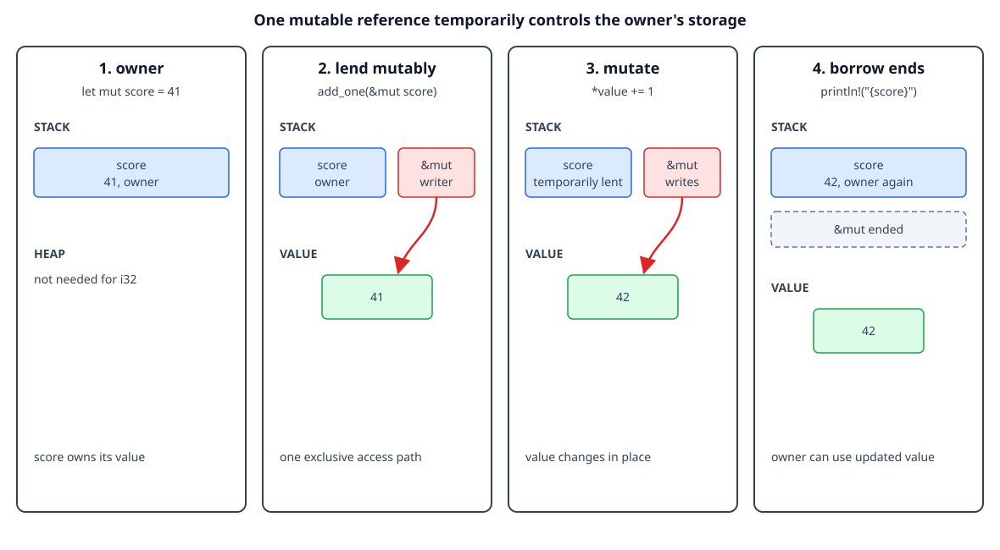

Mutable borrowing
By the end, you will be able to
- Create a mutable reference with
&mut T. - Change an owner's value through a mutable reference.
- Explain why Rust allows only one active mutable reference.
- Recognize conflicts between shared and mutable references.
- Use short reborrows safely.
Exclusive access without moving ownership
A shared reference &T can read a value. A mutable reference &mut T can read
and change it, but it gives one borrower exclusive access for its lifetime. The
owner is temporarily lending control, not giving ownership away:
fn add_one(value: &mut i32) {
*value += 1; // Dereference, then update the owner's integer.
}
let mut score = 41;
add_one(&mut score);
println!("{score}"); // The owner uses the value after the borrow ends.
The binding must be declared mut because the value is being changed. The
function parameter is &mut i32 because the function needs exclusive access to
the caller's integer.

The diagram is conceptual. The mutable reference is shown as temporary exclusive access to the same storage, not as a second allocation or owner.
Checkpoint 1
What does &mut score provide to add_one?
Mutable borrowing with heap-backed data
The same rule works for String, Vec<T>, and other owned values. A function
can modify the allocation through &mut without taking ownership:
fn add_suffix(text: &mut String) {
text.push_str("!");
}
let mut message = String::from("Rust");
add_suffix(&mut message);
println!("{message}");
message still owns the String and its heap allocation. The function only
gets a temporary exclusive view, so cleanup remains the owner's responsibility.
Checkpoint 2
After add_suffix(&mut message) returns, who owns the String?
Why only one mutable reference?
If two mutable references could exist at once, both could write the same value without coordination. Rust prevents that data race even in single-threaded code:
let mut score = 10;
let first = &mut score;
// let second = &mut score; // Error: cannot borrow `score` as mutable twice.
*first += 1;
One mutable reference has exclusive access. Once first is no longer used, a
new mutable borrow can begin:
let mut score = 10;
{
let first = &mut score;
*first += 1;
}
let second = &mut score;
*second += 1;
println!("{score}");
Rust uses the last use of a reference when it can prove that a borrow has ended, so the scopes can often be shorter than the surrounding block.
Checkpoint 3
Why does Rust reject two active &mut references to the same value?
Shared and mutable borrows cannot overlap
A shared reference promises that the value will only be read. A mutable reference promises exclusive access. Those promises conflict, so Rust rejects this pattern:
let mut message = String::from("Rust");
let view = &message;
// let edit = &mut message; // Error: shared and mutable borrows overlap.
println!("{view}");
End the shared borrow before requesting mutation:
let mut message = String::from("Rust");
{
let view = &message;
println!("before: {view}");
}
let edit = &mut message;
edit.push('!');
println!("after: {message}");
This rule prevents a reader from observing a value while another access path is changing it.
Checkpoint 4
Why can &message and &mut message not overlap?
Reborrowing: a short borrow of a mutable borrow
While holding &mut T, you can create a shorter temporary borrow for a call.
The original mutable access becomes usable again after that shorter borrow ends:
fn show(value: &i32) {
println!("current: {value}");
}
fn update(value: &mut i32) {
show(&*value); // Short shared reborrow for this call.
*value += 1; // The mutable borrow is usable again.
}
The &*value expression temporarily views the value through a shared
reference. It does not create another owner, and it does not make the mutable
borrow permanent.
Complete runnable example
The lesson displays the same source file used by the matching demo:
fn add_one(value: &mut i32) {
// Dereference the mutable reference to change the owner's value.
*value += 1;
}
fn add_suffix(text: &mut String) {
// The function mutates the caller's String without taking ownership.
text.push_str("!");
}
fn main() {
let mut score = 41;
add_one(&mut score); // Temporarily lend exclusive access.
println!("score: {score}"); // The borrow ended when the call finished.
let mut message = String::from("Rust");
add_suffix(&mut message);
println!("message: {message}");
}
Run it from the repository root:
rustc examples/02-ownership-and-borrowing/05-mutable-borrowing/main.rs \
-o /tmp/rust-mutable-borrowing
/tmp/rust-mutable-borrowing
Expected output:
score: 42
message: Rust!
Exercise
- Change
add_oneto add10instead of1. - Add a function that removes the last character from a
Stringthrough&mut String. - Uncomment both conflicting borrows and read the compiler's explanation.
- Add a short shared reborrow inside a function that receives
&mut String.
Checkpoint 5
Which statement best summarizes mutable borrowing?
Next
Continue with borrowing collections and iterators.